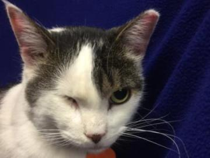

Mini Rex / Rabbit
Neutered Male
4 years old
5 pounds
ID #: 31253658
Adoption Fee: $ 51.00
Location: Golden Valley
Mon–Fri: 12 p.m.–8 p.m.
Sat–Sun: 10 a.m.–6 p.m.
Hi! My name is Dougie.
I was in a shelter that lacked the resources to continue to care for me, so I came to Animal Humane Society to find a new home.
Additional Information
I am a Shy Snuggler! Shy Snugglers are relaxed, gentle and a little bit timid. They adapt fairly quickly to new environments, people and changes in routine, but can be overwhelmed by too much noise or activity. They are affectionate and enjoy human interaction, but also need time alone. They are rarely mischievous and often live harmoniously with other pets. They prefer a calm, quiet home and are a great choice for first-time adopters and homes with gentle children of all ages. They are not the best candidate for agility class or the role of therapy animal, but may enjoy these roles over time.
Giraffe
Chow Chow / Chinese Shar-Pei
Neutered Male
1.5 years old
57 pounds
ID #: 31183166
Adoption Fee: $ 247.00
Location: Woodbury
Mon–Fri: 12 p.m.–8 p.m.
Sat–Sun: 10 a.m.–6 p.m.
Hi! My name is Giraffe.
I was found as a stray, so I came to Animal Humane Society to find a new home.
People describe me as playful. Playful dogs enjoy playing with toys and often enjoy other busy interactions. We may like a good game of fetch or just quietly chewing on a stuffed animal. No matter which toys we choose, we prefer to include our families in the fun.
People also describe me as energetic. Energetic dogs love to be busy, both physically and mentally. We often enjoy seeing and doing new things with our families and are often best matched with active people. Energetic dogs do best in homes that can provide them adequate exercise and mental stimulation, such as running, hiking, or playing Frisbee.
Lived with children: No
Lived with animals:No
Millie

Domestic Shorthair
Spayed Female
6 years old
12 pounds
ID #: 31217439
Adoption Fee: $ 61.00
Location: Golden Valley
Mon–Fri: 12 p.m.–8 p.m.
Sat–Sun: 10 a.m.–6 p.m.
Hi! My name is Millie.
Someone in my family was allergic to me, so I came to Animal Humane Society to find a new home.
People describe me as shy. Shy cats are loving companions that take longer to acclimate to a new environment. A quieter, low-activity home would allow me the opportunity to get used to new things at my own pace.
People also describe me as independent. Independent cats love to explore their surroundings and need plenty of toys and activity to keep them busy and engaged. We tend not to be demanding for cuddles & kisses and mostly enjoy hanging out with you and being a part of your daily activities. Families with older children are especially suitable for cats like me.
Date surrendered:2016-04-06 15:53:49
Time in former home:6 Years
Declawed:No
Lived with children: No
Lived with animals:Yes (Dogs, Cats)
Tutti
Domestic Shorthair
Spayed Female
8.5 years old
16 pounds
ID #: 8751319
Adoption Fee: $ 49.00
Location: Coon Rapids
Mon–Fri: 12 p.m.–8 p.m.
Sat–Sun: 10 a.m.–6 p.m.
Hi! My name is Tutti.
I required more time and attention than my caretaker could provide and I shed too much, so I came to Animal Humane Society to find a new home.
People describe me as affectionate. Affectionate cats often enjoy close interactions and snuggling. We can also be a little bit shy or bashful as we adapt to a new environment, a process that may be easier in homes that have moderate activity.
People also describe me as easy going. Easy going cats are great additions to just about any home. We adapt fairly quickly to new environments and changes, so if you're in a busier, active household, I might be right for you. We also often get along well with other pets.
Forget me not
Hi, I'm Tutti! If you've ever experienced being picked last at a team draft or a dance, you know how I feel. For some reason, prospective adopters have passed me by without getting to know me and what a great pet I could be if given a chance. The staff and volunteers know how special I am and hope that you consider me when you're looking for a new pet. Some of the activities I enjoy include: Lounging, getting scratched by the ears, laying in the sun.
Date surrendered:2016-02-03 18:55:05
Time in former home:6 Years
Declawed:No
Lived with children: No
Lived with animals:Yes (Cats)
Why adopt from AHS?
Adoption is an act of love.
Animal Humane Society is here for animals that have nowhere else to go. They arrive at our shelters for a variety of reasons, but no matter the circumstances, they’re all patiently waiting for the same things: love, security, and a family to call their own. That’s where you come in.
When you adopt, you’re giving one loving animal the second chance it deserves — and freeing up shelter resources to help another animal in need. Every day, dogs, cats, and critters are euthanized at shelters across the U.S. simply because there’s nobody willing to adopt them. We work hard to make sure that’s not the case in our community. Thanks to our amazing adopters, last year we were able find placement for more than 22,000 animals — 95.2 percent of the animals in our care.
We are so fortunate and proud to serve a community that widely supports animals through adoption.